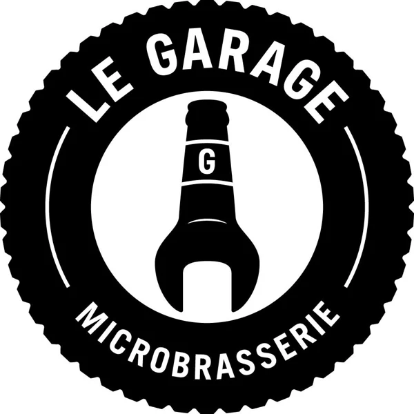
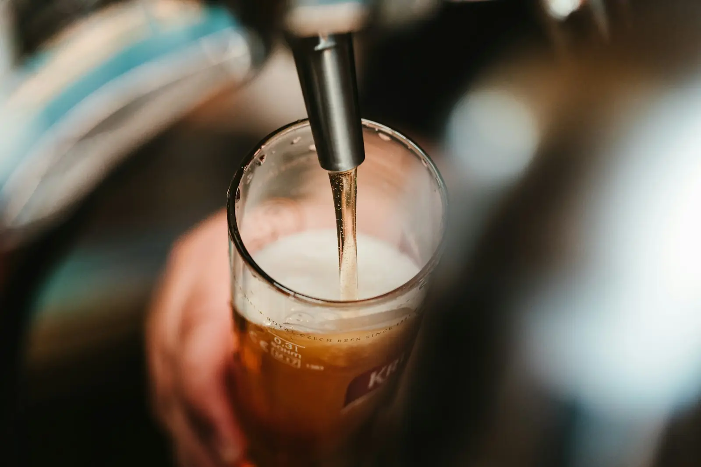
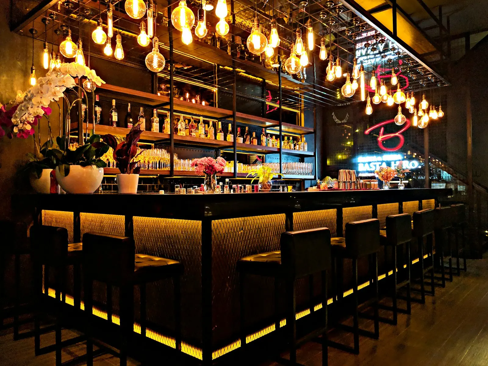

Arrêtez faire le plein.
- Adresse
- 661, rue Principale, Sainte-Anne-de-la-Pérade (QC) G0X 2J0
- Tél.
- 418-325-1400
- Courriel
- microlegarage@gmail.com
- Heures
- À intégrer*

L'abus d'alcool est dangereux pour la santé. Avec modération.

Microbrasserie et resto-pub dans un ancien concessionnaire automobile, sur le Chemin du Roy à Sainte-Anne-de-la-Pérade.


Les frères Lépine ont ouvert Le Garage en mars 2019 dans un ancien concessionnaire automobile. Aujourd'hui : 65 places en salle, 25 au pub, 48 en terrasse, et des bières qu'on retrouve dans environ 120 points de vente.
Photos d'ambiance — à remplacer par les vôtres. Liste des bières et menu à intégrer.*
4,6 / 5 · 381 avis Google
« Quelle belle place pour se sentir à l’aise et quel décor incroyable. Chaque petits détails est pensé. Cela mérite plus que le détour et nous vous conseillons de prendre la planche de dégustations de 4 verres. Laurie donne un service très conviviale et amicale. Juste wow! Par contre les portes ouvrent à 15h mais la cuisine ouvre à 17h ! »
« Belle découverte! Bonnes bières très abordables, déco super, chaleureuse. Jeux de darts et plus....Bon service+++! »
« La nourriture est bonne et le décor est vraiment original. Ça vaut le détour. Et, c'est certain que je vais y retourner. »
L'abus d'alcool est dangereux pour la santé. Avec modération.